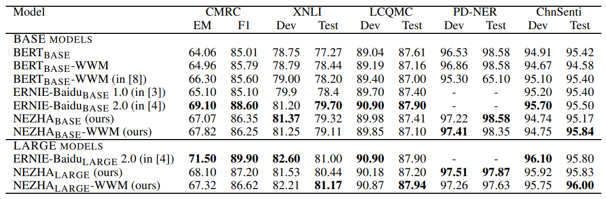

返回首页 create: 2021-01-01 18:15 create: 2021-01-02 12:37
NEZHA是华为在预训练模型上的实践总结，它在BERT的基础上加了很多当下有用的优化，比如Functional Relative Positional Encoding、Whole Word Masking策略、混合精度训练和Lamb优化器。
实验表明，NEZHA在多项具有代表性的NLU任务上均达到了SOTA.
Introduction简单提了下近年来中文预训练的发展，比如bert中文版、ERNIE-baidu中文版以及BERT-WWM。在中文预训练中使用到了whole word masking这个新的掩码机制，当然也有token-document relation prediction和sentence reordering这些新的预训练任务。
NEZHA的主要改进是在位置编码上，它使用到了Functional Relative Positional Encoding，即函数式相对位置编码。简单说说它的来历：我们知道Transformer和BERT都使用到了位置编码，一个是函数式位置编码，即使用正余弦函数来对位置进行编码；另一个是参数式位置编码，即把位置嵌入理解成模型参数的一部分，通过预训练来学习。它们都是绝对位置编码。后来文献11提出一个参数式的相对位置编码，将相对位置信息加到了Transformer的自注意力层；Transformer-XL和XLNet提出了函数式相对位置编码。所以本文主要的内容就是采用函数式相对位置编码。
$$ \begin{aligned} a_{ij}[2k] & = sin(\frac{j - i}{10000^{\frac{2 \cdot k}{d_z}}})\\ a_{ij}[2k + 1] & = cos(\frac{j - i}{10000^{\frac{2 \cdot k}{d_z}}}) \end{aligned} $$
上式中，i,j是索引位置，二者的差值相当于绝对位置的索引值。
BERT-WWM的意思就是在对汉字进行掩码时，会直接对整个词语进行遮掩，所以需要使用分词工具。NEZHA使用jieba作为中文分词工具。
混合精度可以提高训练效率2-3倍，同时也减少了模型的占用空间，这样便可以使用较大的batch size。
Conventionally, the training of deep neural network uses FP32(single-precision float point format) to present all the variables(including the model parameters and gradients) involved in the training. Mixed precision training adopts mixed-precision in the training. Specifically, it maintains a single-precision copy(called Master Weights) of the wegihts in the model. In each training iteration, it rounds the Master Weights into FP16(half-precision float point format) and performs the forward and backward pass with the weights, activations and gradients stored in FP16 format. Finally, it converts the gradients into FP32 format and updates the Master Weights by using the FP32 gradients.
《Reducing bert pre-training time from 3 days to 76 minutes》专为大batch size分布式训练设计的，大batch size是加速训练的有效方法，然而如果不谨慎调整学习率，当batch size超过一个阈值，性能会受到较大的损害。LAMB优化器采用了一个通用自适应策略，通过理论分析来提供收敛的insights（就是朝着收敛的方向走），可以在最大到30k batch size的情况不影响性能来加速训练，从而使得预训练的时间从3天降低到76分钟。
预训练的数据集有三个：中文维基百科、百度百科（爬取的）、中文新闻（也是爬的）。预训练的机器是华为云上的10台服务器，每台服务器上面有8块32G V100 GPU。分布式训练采用了Ring-AllReduce算法和Horovod框架。我们从头开始训练模型，并且在训练loss收敛时终止。对于NEZHA-base，最大学习率1.8e-4(1800步预热+线性衰减)，每个GPU上的batch size为180，总共batch size为180*10*8=14400；对于NEZHA-large，最大学习率1e-4(1800步预热+多项式衰减)，每个GPU上batch size为64，总共batch size为5120.除此之外，在训练时采用混合精度。
在CMRC中文阅读理解、XNLI多语言推理、LCQMC问题匹配、PD-NER人民日报命名实体识别、ChnSenti情绪分类五个数据集上比较性能。

实验结果上看，ERNIE 2.0还是占优。
@flyangovoyang